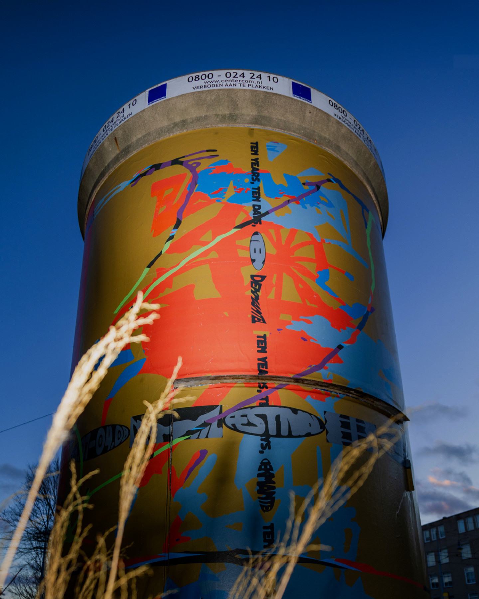
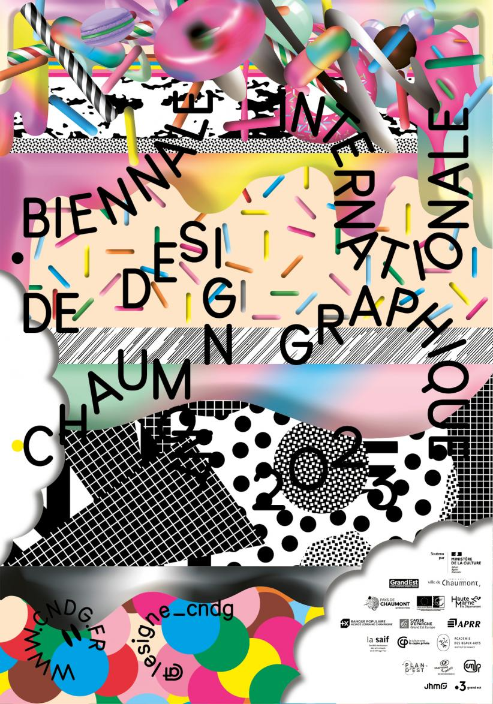

Identità temporanee. Tracce permanenti.
Nessuna corrispondenza
Modifica la ricerca o rimuovi i filtri per tornare a esplorare.


L’evento finisce.L’identità lascia una traccia.
Marchi, manifesti e applicazioni per osservare cosa cambia, cosa continua e cosa resta da un’edizione all’altra.
Trascina o scorri in ogni direzione.
Cerca un nome e combina i filtri.
Apri un’immagine e leggi la scheda.
Il tuo percorso
Puoi scegliere più ambiti.